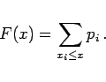
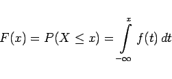

Inhalt Index DeskTop Bronstein

 Wahrscheinlichkeitsrechnung und Mathematische Statistik Wahrscheinlichkeitsrechnung Zufallsgrößen, Verteilungsfunktionen Verteilungsfunktion
Wahrscheinlichkeitsrechnung und Mathematische Statistik Wahrscheinlichkeitsrechnung Zufallsgrößen, Verteilungsfunktionen Verteilungsfunktion


|  | (16.45) |
darstellen, dann spricht man von einer stetigen Verteilungsfunktion
|  | (16.47) |
und einer stetigen Zufallsgröße.
Hinweis: Wenn keine Verwechslung mit der oberen Integrationsgrenze möglich ist, wird häufig die Integrationsveränderliche anstelle von t mit x bezeichnet.